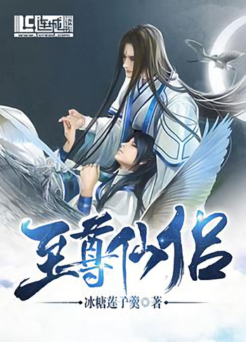

El genio cultivador Lin Xuanzhi no decepcionó al mundo en su vida pasada, sin embargo, solo traicionó a un Yan Tianhen.
Sólo cuando sus amigos más cercanos, maestros y compañeros discípulos lo apuñalaron por la espalda y lo mataron, supo qué tipo de crímenes imperdonables había cometido.
Después de obtener la gran oportunidad de renacer, Lin Xuanzhi, que había regresado del infierno, juró apreciar a la persona que había traicionado en su vida pasada.